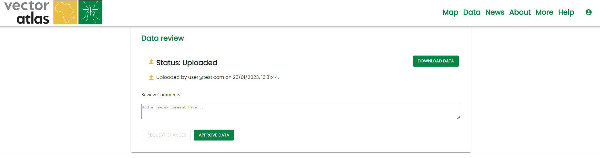
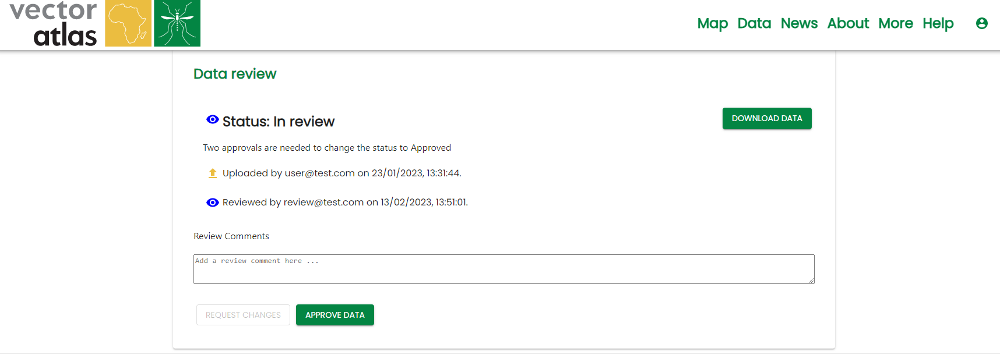
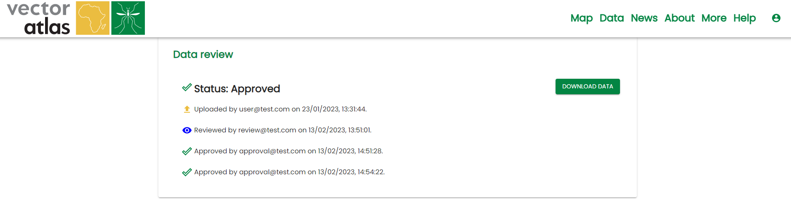

Reviewing data
When data has been successfully uploaded, the system will send an email to all users with the reviewer role, containing a link to the review page:

To see the data uploaded, click the DOWNLOAD DATA button. This will download the data as a csv file.
To leave any comments on the data for the uploader to address, type them into the Review Comments box and click REQUEST CHANGES. This will send an email to the uploader and all other reviewers with the comments. It will also change the status of the dataset to ‘In review’:

To approve data, click on the APPROVE DATA button. This will send an email to the uploader and all other reviewers, saying that you have approved the data.
Two approvals are needed to fully approve data - once two reviewers have approved, the data will be made public, and the review page will be updated:
